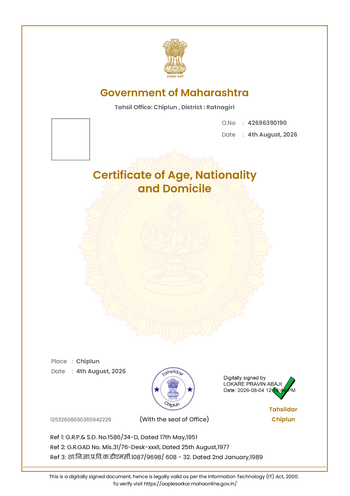

It is hereby certified that, Shri/Shrimati Basit Sultan Shiralkar
Village/Town/City Shiral, Village Shiral Tehsil Chiplun,
District Ratnagiri was born on 23rd December, 1994 (Twenty Third of
December in the year One Thousand Nine Hundred and Ninety Four) at
Dapoli Camp, Tehsil Dapoli, District Ratnagiri in the State of
'MAHARASHTRA' within the territory of INDIA and is a Citizen of India
and has domiciled in the State of Maharashtra.